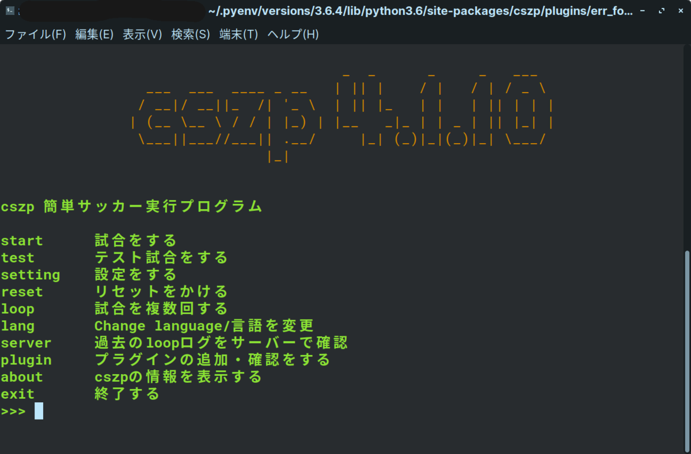
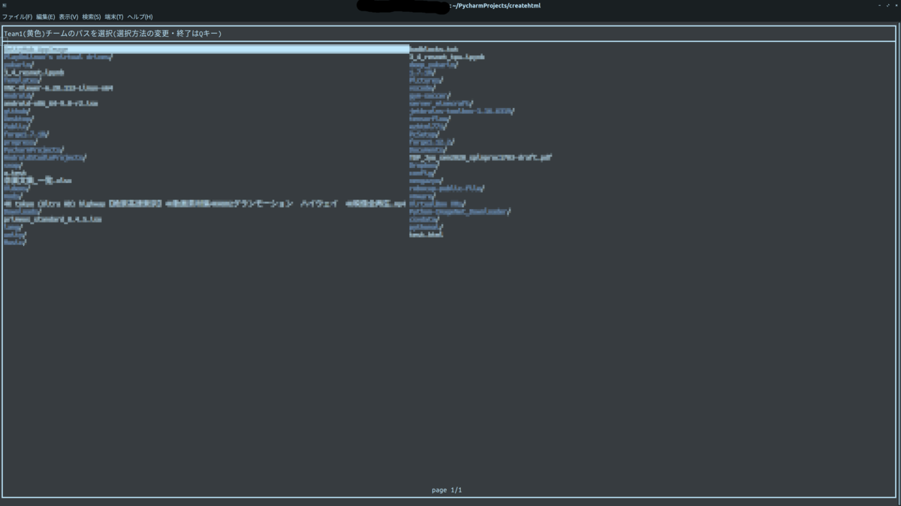
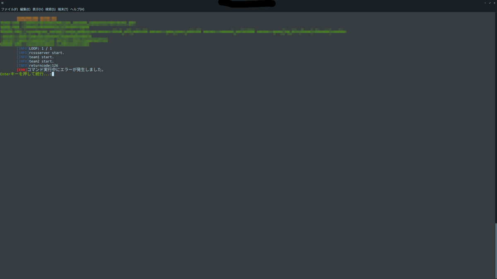

注釈
バージョン等は撮影時の最新バージョンで、現在あるバージョンでは無い可能性があります。



以下の機能・仕様がついています。日々機能や仕様は追加中です。
この機能は予告なく仕様が変更されたり削除・追加する場合があります。
感覚的に操作して実行できる
自動的に実行を繰り返して、点数等を集計する機能
総当たり戦機能
いちいちパスを入力しなくてもリスト化して実行が可能な「簡単サッカー実行リスト」機能
CUIで完結しサーバーでも使用可能
英語日本語完全対応
実行時にwebから現在の結果をリアルタイムで確認可能
などなどいろいろな機能が搭載されています。